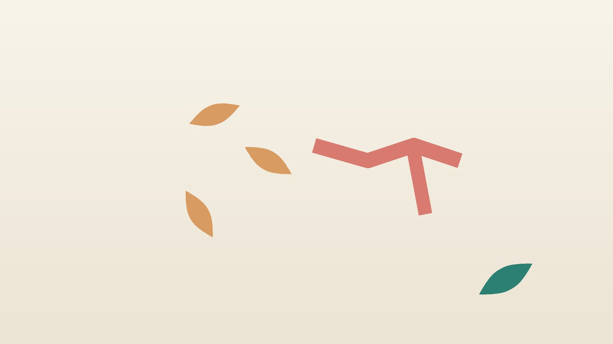

건강 칼럼 · 체질·만성질환 · 인천 환절기 감기 한의원
환절기마다 감기 몸살을 앓는다면, 환절기 감기 한방 관리

지금 내 감기 몸살, 어떤 모습인가요?
- 아침저녁 쌀쌀해지면 목이 칼칼하고 재채기가 시작된다
- 으슬으슬 춥고 온몸이 두들겨 맞은 듯 쑤신다
- 목 뒤와 어깨가 뻣뻣하게 굳는다
- 열은 없는데 콧물과 코막힘이 며칠째다
- 입맛이 없고 속이 메스껍다
- 감기가 낫고도 기운이 돌아오는 데 한참 걸린다
이 체크리스트는 진단 도구가 아닙니다. 열이 높거나 숨이 차다면 체크 결과와 상관없이 병원 진료를 먼저 받으세요.
감기, 독감, 코로나19는 어떻게 다른가요?
셋 다 호흡기 바이러스가 일으키지만 시작하는 모습과 위험도가 다릅니다. 증상만으로 가르기는 어려워 의심되면 검사로 확인합니다.
- 감기: 리노바이러스 등 여러 바이러스가 원인입니다. 콧물, 재채기, 목 따가움이 하루 이틀에 걸쳐 서서히 오고, 열은 없거나 미열에 그치는 경우가 많습니다.
- 독감(인플루엔자): 갑자기 38도 넘는 열과 오한, 심한 근육통, 두통이 오고 몸져눕게 됩니다. 증상 시작 48시간 안에 항바이러스제를 쓰면 앓는 기간을 줄이는 데 도움이 됩니다.
- 코로나19: 열, 기침, 목 아픔, 피로가 흔하고 냄새나 맛이 둔해지기도 합니다. 증상이 있으면 검사를 받고, 결과에 따라 마스크 착용과 외출 자제 같은 질병관리청 안내를 따르세요.
바로 병원에 가야 하는 신호
- 38도 넘는 열이 3일 넘게 내리지 않는다
- 숨이 차거나 숨 쉴 때 가슴이 아프다
- 입술이 파래지거나 정신이 흐릿하고 말이 어눌하다
- 물을 거의 못 마시고 소변이 눈에 띄게 줄었다, 입안이 바싹 마른다
- 나아지던 열과 기침이 며칠 뒤 다시 심해졌다 (폐렴 같은 합병증 의심)
- 목이 부어 침을 삼키기 어렵거나 고개를 숙이지 못할 만큼 목이 뻣뻣하다
숨이 많이 차거나 의식이 흐려지면 119를 부르세요. 생후 3개월 미만 아기가 38도 이상이면 바로 소아청소년과나 응급실로 가세요. 어르신은 열이 높지 않아도 기운이 갑자기 떨어지거나 평소와 달리 헛말을 하면 폐렴일 수 있습니다.
한의학은 환절기 감기를 어떻게 보나요?
한의학에서는 감기를 바깥의 나쁜 기운이 겉을 침범한 외감(外感)으로 보고, 찬 기운이 중심인 풍한(風寒)과 열이 중심인 풍열(風熱)을 나누었습니다. 한나라 장중경의 『상한론』은 목덜미와 등이 뻣뻣하고 땀이 나지 않으며 바람을 싫어하는 태양병에 갈근탕을 썼고, 청나라 오국통의 『온병조변』은 열이 나고 목이 아프며 갈증이 나는 초기 온병에 은교산을 썼습니다.
같은 감기라도 땀이 나는지, 목이 붓는지에 따라 처방이 정반대가 되기도 해서, 지금 몸이 어느 단계에 있는지를 먼저 봅니다.
나의 감기 몸살은 어떤 유형일까?
병원 진료가 필요한 신호가 없을 때 쓰는 한의학적 구분이며, 감기가 진행하면서 유형이 바뀌기도 합니다.
1. 풍한(風寒) 으슬으슬 추운 유형
- 이런 분에게 많아요
- 찬 바람을 쐬거나 비를 맞은 뒤 시작된 분
- 나타나는 모습
- 오한이 심하고 땀이 나지 않으며 목덜미가 굳는다
- 함께 오는 몸의 신호
- 맑은 콧물, 두통, 온몸 쑤심
- 진찰에서 보이는 모습
- 맥이 뜨고 팽팽하며 설태가 얇고 흼
- 치료 방향
- 겉을 덥혀 땀으로 찬 기운을 내보내는 방향 (갈근탕 계열)
- 오늘부터 해 볼 것
- 따뜻한 물로 샤워한 뒤 목에 수건을 두르고 일찍 누우세요.
2. 풍열(風熱) 목부터 붓는 유형
- 이런 분에게 많아요
- 건조한 실내에서 지내거나 목을 많이 쓰는 분
- 나타나는 모습
- 목이 따갑고 붓고, 열이 오르며 땀이 조금 난다
- 함께 오는 몸의 신호
- 누런 콧물, 갈증, 기침
- 진찰에서 보이는 모습
- 혀끝이 붉고 맥이 뜨고 빠름
- 치료 방향
- 열을 식히고 목의 염증을 가라앉히는 방향 (은교산 계열)
- 오늘부터 해 볼 것
- 미지근한 물을 자주 마시고 실내 습도를 맞추세요.
3. 기허외감(氣虛外感) 지친 몸에 오는 유형
- 이런 분에게 많아요
- 어르신, 과로가 겹친 분, 큰 병을 앓고 난 분
- 나타나는 모습
- 열은 심하지 않은데 기운이 없고 감기가 질질 끈다
- 함께 오는 몸의 신호
- 가래 기침, 식욕 저하, 땀이 쉽게 남
- 진찰에서 보이는 모습
- 맥에 힘이 없고 혀가 옅은 색
- 치료 방향
- 기운을 보태면서 겉의 기운을 풀어 주는 방향 (삼소음 계열)
- 오늘부터 해 볼 것
- 목욕은 짧게 하고, 열이 없으면 집 안에서 조금씩 움직이세요.
한의원에서는 어떻게 진찰하나요?
- 위험 신호 확인: 체온, 숨참, 가슴 통증, 탈수 여부를 먼저 보고 해당하면 병원 진료를 안내합니다.
- 검사 여부: 독감·코로나19 검사 결과를 확인합니다.
- 오한과 땀: 추운지 더운지, 땀이 나는지, 목과 코의 상태를 자세히 여쭙니다.
- 복용 중인 약: 해열제, 감기약, 혈압약 등 드시는 약을 알려 주시면 확인해 처방합니다.
침·약침·한약 치료는 어떻게 하나요?
1. 침 치료
- 풍지(風池): 뒤통수 아래, 목 양옆 굵은 근육 바깥쪽의 오목한 곳입니다. 목 뒤가 굳고 머리가 무거울 때 씁니다.
- 대추(大椎): 고개를 숙이면 가장 튀어나오는 목뼈 바로 아래입니다.
- 곡지(曲池): 팔꿈치를 굽혔을 때 생기는 가로 주름 바깥 끝입니다. 열이 날 때 씁니다.
어린이에게는 바늘 대신 피부에 붙이는 소아 스티커침을 씁니다. 임신 주수를 알려 주시면 손등·발목 안쪽과 아랫배·허리의 혈을 빼고 놓습니다.
2. 약침
열이 내린 뒤에도 목과 어깨, 등의 몸살 통증이 오래 남는 어른은 굳은 근육에 약침을 시행하고 온열 요법을 함께 합니다. 아이는 약침 대상이 아닙니다.
3. 한약
감기 단계와 체질을 보고 탕약 위주로 처방합니다. 땀을 내는 처방 가운데 마황이 든 약은 혈압이 높거나 심장 질환, 갑상선 질환이 있으면 피하거나 줄여야 하므로 병력을 꼭 말씀해 주세요. 임신 중이거나 이런 병력이 있다면 진료 때 꼭 알려 주세요. 확인 후 안전한 약재로 처방합니다. 아이에게는 쓴맛이 덜한 약재 위주로 처방하며 집에서 단것을 조금 타서 먹여도 됩니다. 돌이 지나지 않은 아기에게는 꿀을 타지 마세요. 한약은 원장이 원내 탕전실에서 약재 선별부터 달이는 과정까지 직접 관리하며, 10일분씩 처방해 복용 경과를 보고 약재 구성과 양을 조절합니다.
원장님이 네이버 블로그에 진료 이야기와 건강 정보를 꾸준히 올리고 있습니다. 더 많은 이야기는 블로그에서 확인해 보세요.
블로그 보기관리는 어떤 순서로 진행되나요?
- 1~3일 열과 위험 신호를 확인하고, 필요하면 독감·코로나19 검사를 받습니다.
- 한방 진료 유형을 나누어 침 치료와 탕약을 시작합니다.
- 열이 내린 뒤 남은 기침, 몸살, 입맛 저하를 살피며 처방을 바꿉니다.
- 회복기 다음 환절기를 대비해 잠과 옷차림을 점검합니다.
기간은 증상과 체력에 따라 다르며, 진찰 후 개인별로 안내합니다.
감기 몸살 때 집에서 할 일
- 해열제 쓰는 법: 열이 38도를 넘고 불편할 때 아세트아미노펜이나 이부프로펜을 정해진 용량과 간격대로 드세요. 간 질환이 있거나 술을 마셨다면 아세트아미노펜을, 위궤양·신장 질환이 있거나 물을 못 마셨다면 이부프로펜을 조심합니다. 어린이와 청소년에게는 아스피린을 쓰지 않습니다.
- 물 자주 마시기: 미지근한 물이나 보리차를 조금씩 자주 드세요.
- 옷차림: 아침저녁에는 얇은 겉옷을 겹쳐 입으세요.
- 실내 습도: 습도를 40~60%로 맞추면 목이 덜 마릅니다.
- 기침 예절: 기침할 때는 옷소매로 가리고 손을 자주 씻으세요.
다른 진료가 함께 필요한 경우
- 독감이 의심되면 증상 시작 48시간 안에 내과나 소아청소년과에서 검사를 받으세요.
- 기침이 3주 넘게 이어지면 흉부 X선 등으로 다른 원인을 확인하세요.
- 귀가 아프거나 누런 콧물과 얼굴 통증이 10일 넘게 가면 이비인후과 진료가 필요합니다.
- 만성 질환이 있는 분과 어르신은 매년 독감 예방접종을 챙기세요.
자주 묻는 질문 Q&A
- Q1. 감기에 항생제를 먹어야 하나요?
- 감기는 바이러스가 원인이라 항생제가 듣지 않습니다. 세균 감염이 의심될 때만 의사가 판단해 씁니다.
- Q2. 열이 나면 무조건 해열제를 먹어야 하나요?
- 열 자체보다 불편함을 덜기 위해 씁니다. 잘 먹고 잘 자면 바로 먹지 않아도 됩니다.
- Q3. 독감 검사는 언제 받는 게 좋나요?
- 증상이 생기고 되도록 빨리 받아 48시간 안에 치료를 시작하는 편이 좋습니다.
- Q4. 감기약과 한약을 같이 먹어도 되나요?
- 드시는 감기약 이름을 알려 주시면 확인해 처방합니다.
- Q5. 땀을 내면 감기가 빨리 낫나요?
- 찬 기운이 중심일 때는 땀이 나며 풀리기도 하지만, 열이 높거나 탈수가 있으면 억지로 땀을 내지 마세요.
- Q6. 아이가 열이 날 때 한의원에 가도 되나요?
- 위험 신호가 없으면 가능합니다. 생후 3개월 미만이거나 처지면 소아청소년과가 먼저입니다.
- Q7. 어르신 감기는 무엇을 더 조심해야 하나요?
- 열이 없어도 기운이 갑자기 떨어지거나 헛말을 하면 폐렴일 수 있으니 바로 진료받으세요.
- Q8. 목이 뻣뻣할 때 눌러 볼 곳이 있나요?
- 풍지혈을 엄지로 지그시 눌러 보세요.
문원열 대표원장한의사 · 365스마일한의원
임상 경력 15년, 인천 서구 가정동에서 개원 후 10년째 진료하고 있으며, FCST 턱관절학회·연부조직학회·침도학회 등에서 활동합니다. 아픈 곳만이 아니라 증상의 원인을 찾아 진료합니다.
진료 안내
- 진료시간
- 평일 09:00~20:00 (점심시간 13:00~14:00, 접수 마감 19:30)
토·일·공휴일 09:00~15:00 (접수 마감 14:30) - 주소
- 인천광역시 서구 가경주로 46, 2층 (가정동)
인천2호선 가정중앙시장역 인근
영상으로 길 안내 보기 → - 주차
- 한의원 건물 바로 앞 1층 도원주차장
- 예약
- 예약 바로가기 또는 전화 예약
진료시간은 사정에 따라 바뀔 수 있으니 방문 전 전화로 확인해 주세요.
함께 읽으면 좋은 칼럼
건강 칼럼 전체 보기 →


참고 자료
- 장중경, 『상한론(傷寒論)』 태양병(太陽病)
- 오국통, 『온병조변(溫病條辨)』
- 질병관리청 국가건강정보포털 — 원문
※ 이 글은 일반적인 건강 정보이며, 개인의 상태에 따라 치료 방법과 결과는 다를 수 있습니다. 정확한 진단과 치료는 진료를 통해 결정됩니다. 침·약침 시술 후 드물게 멍, 통증 등이 생길 수 있습니다.